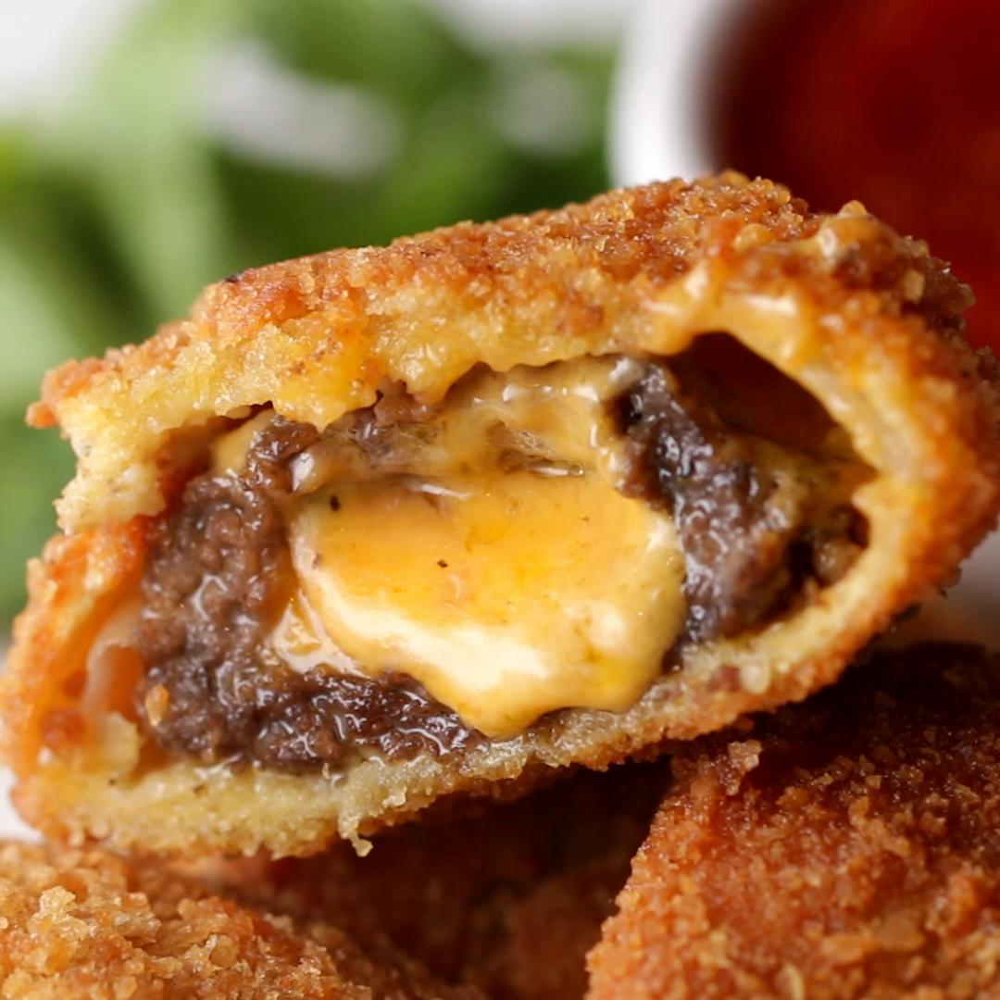

Cheeseburger Onion Rings

Description:
This recipe shall help you make delicious
cheeseburger onion rings at home
Ingredients:
- 1 lb Ground Beef (455g)
- 1 tsp Salt
- ½ tsp Pepper
- 1 tsp Onion Powder
- ¼ lb Cheddar Chees (115g), cut into 1-inch squares
- 1 large White Onion
- 1 cup Flour (125g)
- 5 Eggs
- 3 cups Pano Breadcrumbs
- Oil
- Ketchup
Steps:
- Heat oil in a pot over medium heat to 350°F (180°C).
- In a bowl, mix together the ground beef, salt, pepper, and onion powder.
- Peel and slice the onion into 1-centimeter (½ inch) rings. Detach the rings from each other.
- Take a spoonful of the beef mixture and press it into the bottom of a ring.
- Push a cheddar square into the center of the beef.
- Seal the top with another spoonful of the beef, pressing it flat.
- Repeat with the rest of the rings.
- Place the flour, eggs, and bread crumbs into three separate bowls.
- Dip a ring into the flour, shaking off excess, then into the egg, the bread crumbs, then back to the eggs, and one last time into the breadcrumbs.
- Repeat with the remaining rings.
- Fry the rings for 5-6 minutes, until deep golden-brown.
- Drain on a paper towel, then serve with ketchup!
- Enjoy!